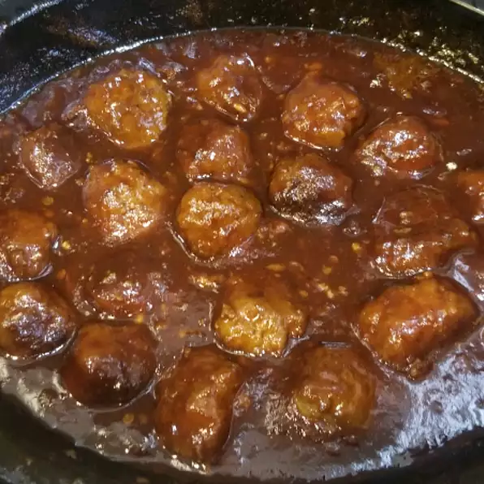

Honey Garlic Meatballs

- 1/2 cup ketchup
- 1/4 cup brown sugar
- 3 cloves garlic, minced
- 2 tablespoons chile-garlic sauce
- 2 tablespoons soy sauce
- 1 teaspoon Chinese five-spice powder
- 1 (2 pound) bag frozen cooked meatballs
- Combine ketchup, brown sugar, honey, garlic, chile-garlic sauce, soy sauce, and five-spice powder together in a bowl. Let sauce stand at room temperature for 1 hour.
- Add frozen meatballs to a slow cooker. Pour sauce over meatballs and toss gently to coat.
- Cook on Low for 4 hours, stirring occasionally.